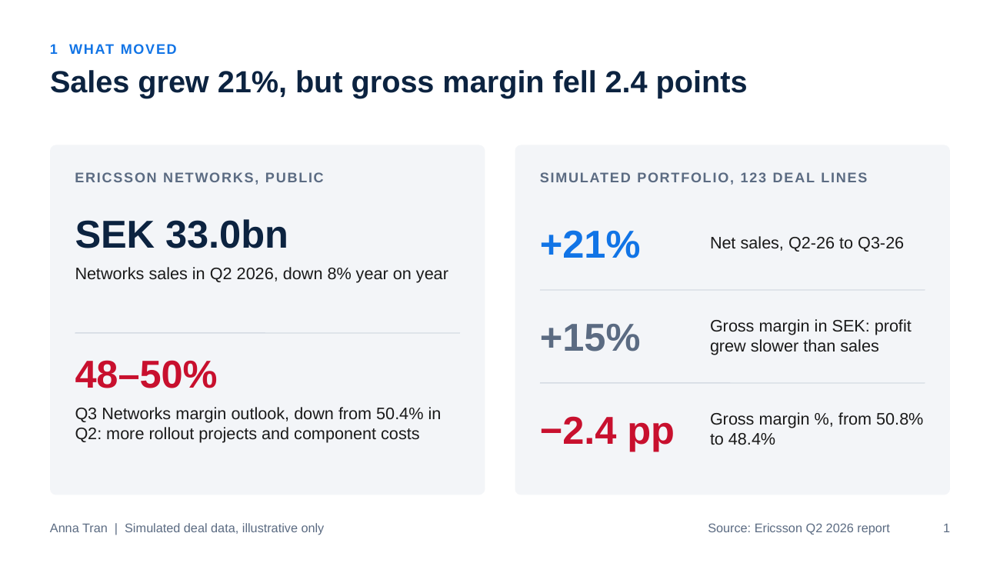
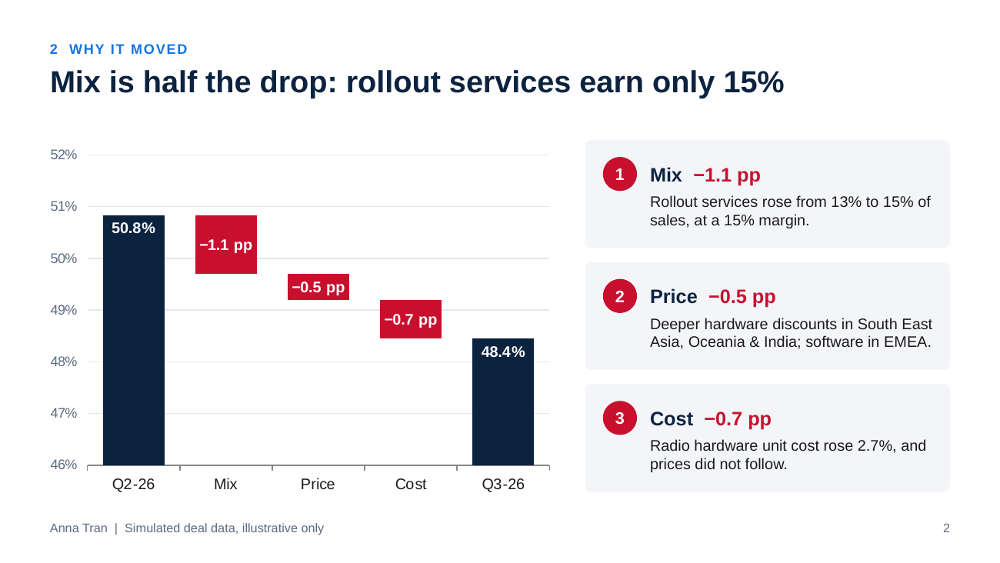
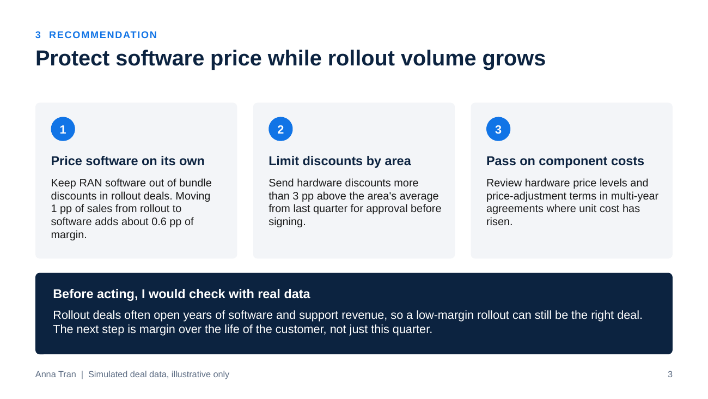

Commercial analytics case study
Sales grew 21%, but gross margin fell 2.4 points. Why?
All deal data in this project is simulated and illustrative. It is not Ericsson data. Public Ericsson figures come from the Second quarter report 2026.
The question
In its Q2 2026 report, Ericsson said Networks gross margin would come under pressure in Q3 because of more network rollout projects and higher component costs. I wanted to practise the question a commercial analyst gets in that situation: when sales go up but margin goes down, how much is product mix, how much is price, and how much is cost?
What I built
A simulated portfolio of 123 deal lines sold to fictional operators across four market areas, in two quarters. Each deal mixes radio hardware, RAN software, rollout services and support services, with list price, discount and unit cost. The Excel model then:
- splits the change in gross margin into mix, price and cost effects that add up exactly to the total change
- compares average discounts by market area and product line between the two quarters
- feeds a waterfall chart, and lets you compare any two quarters by changing two cells
Findings
Method
| Effect | Formula (per product line) |
|---|---|
| Mix | (share of sales B − share A) × (product line margin A − total margin A) |
| Price | share B × (margin at B price and A unit cost − margin A) |
| Cost | share B × (margin B − margin at B price and A unit cost) |
Limitation: the price effect also picks up shifts in deal mix within a product line, for example more volume from a market with deeper discounts. The Discounts sheet shows where that comes from.
Recommendation
Protect software price while rollout volume grows: price software on its own in rollout deals, set discount limits by market area, and pass rising component costs into price levels and contract terms. Before acting on real data, I would check margin over the life of the customer, since rollout deals often lead to years of software and support revenue.
Slides


